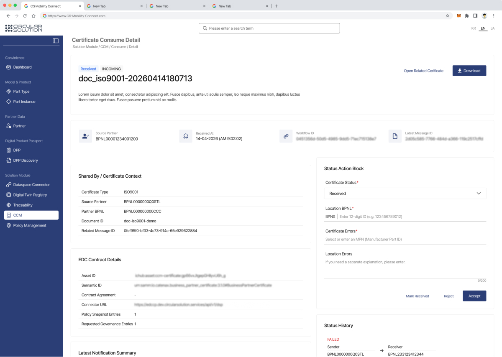
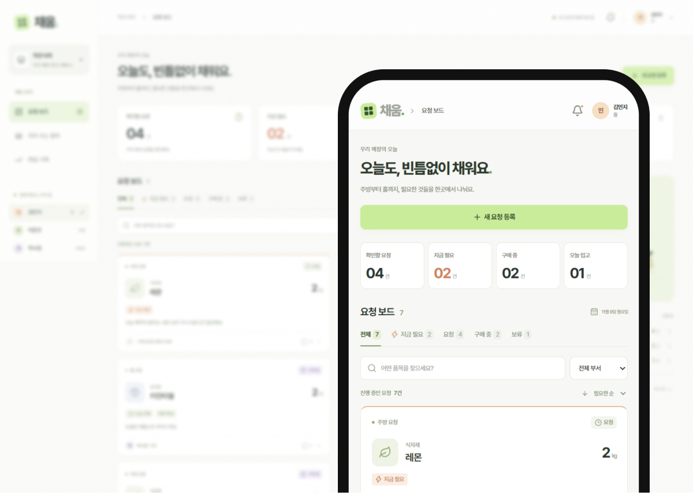
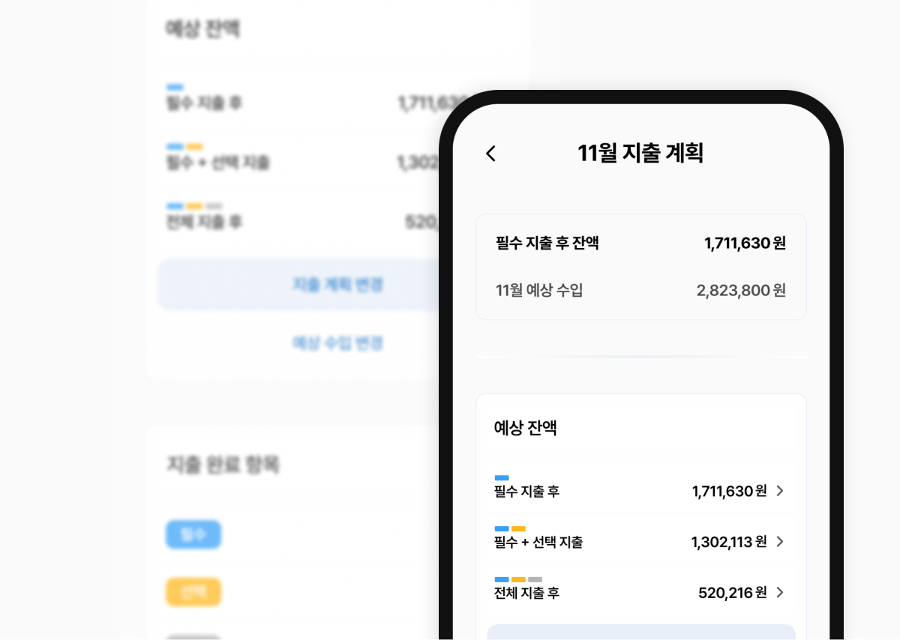
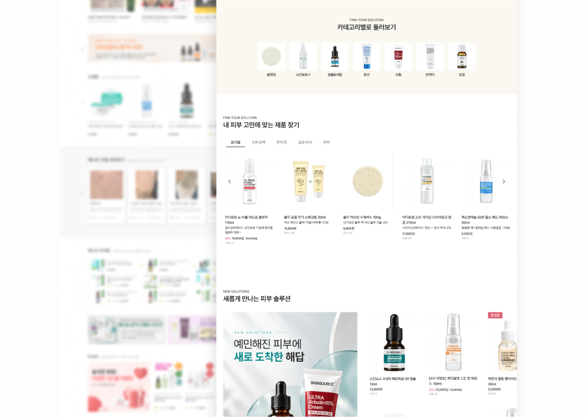

사용자의 업무를 기준으로
아이디어를 사용자가 실제로 수행할 순서의 구조로 다시 살핍니다.
UX/UI DESIGNER · KO SOYOUNG
서로 다른 입장에서 발생하는 불편을 이해하고
개선된 경험을 서비스로 풀어내는 UI/UX 디자이너 고소영입니다.
아이디어를 사용자가 실제로 수행할 순서의 구조로 다시 살핍니다.
지금 어느 단계이며 무엇을 입력해야 할지 직관적인 화면과 피드백으로 사용자를 안내합니다.
반복되는 요소들을 컴포넌트로 정리하고 동료와 화면 동작 및 구현을 논의합니다.
01실무 프로젝트 B2B SaaS

지속적으로 변경되는 요구사항과 기획 공백 속에서 서비스의 일관성과 개발 협업 방식을 함께 개선하려 했던 경험을 담았습니다.
프로젝트 자세히 보기 새 탭에서 열기04개인 프로젝트 발주 앱 아이디어 구체화

실제 매장에서 반복되는 직원·사장님 간 정보 전달 문제를 해결하기 위해 구상한 커뮤니케이션 서비스입니다.
프로토타입 자세히 보기 새 탭에서 열기03개인 프로젝트 지출계획 앱 아이디어 구체화

소비 계획 자체보다 예산 확정 전 지출의 필요성과 우선순위를 인식하게 하는 데 초점을 둔 프로젝트입니다.
프로토타입 자세히 보기 새 탭에서 열기02개인 프로젝트 커머스 UX 리뉴얼

포트폴리오 제작에서 출발했으며, 사이트 탐색 중 느낀 정보 과밀과 시각적 피로가 개선의 계기가 된 프로젝트입니다.
프로젝트 자세히 보기 새 탭에서 열기구조를 이해하고,
화면으로 구체화하는 일.
웹디자인과 퍼블리싱을 거쳐 B2B 플랫폼의 UX/UI를 설계했습니다. 사용자가 이해할 수 있는 흐름과 실제 구현할 수 있는 기준을 함께 고민합니다.
이력서 보기 PDF, 새 탭에서 열기2025.07 - 2026.05
UX/UI 디자이너 · 전략기획부서
B2B 플랫폼 정보구조·흐름·주요 화면 및 상태값 설계2025.02 - 2025.06
웹디자이너·퍼블리셔 · 웹디자인팀
반응형 웹사이트 디자인 및 HTML/CSS 기반 퍼블리싱Figma · FigJam · Photoshop · Illustrator
HTML · CSS · jQuery(기초) · Notion · Jira
CONTACT